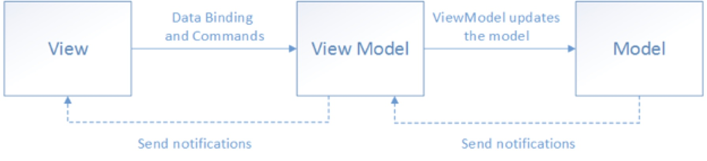
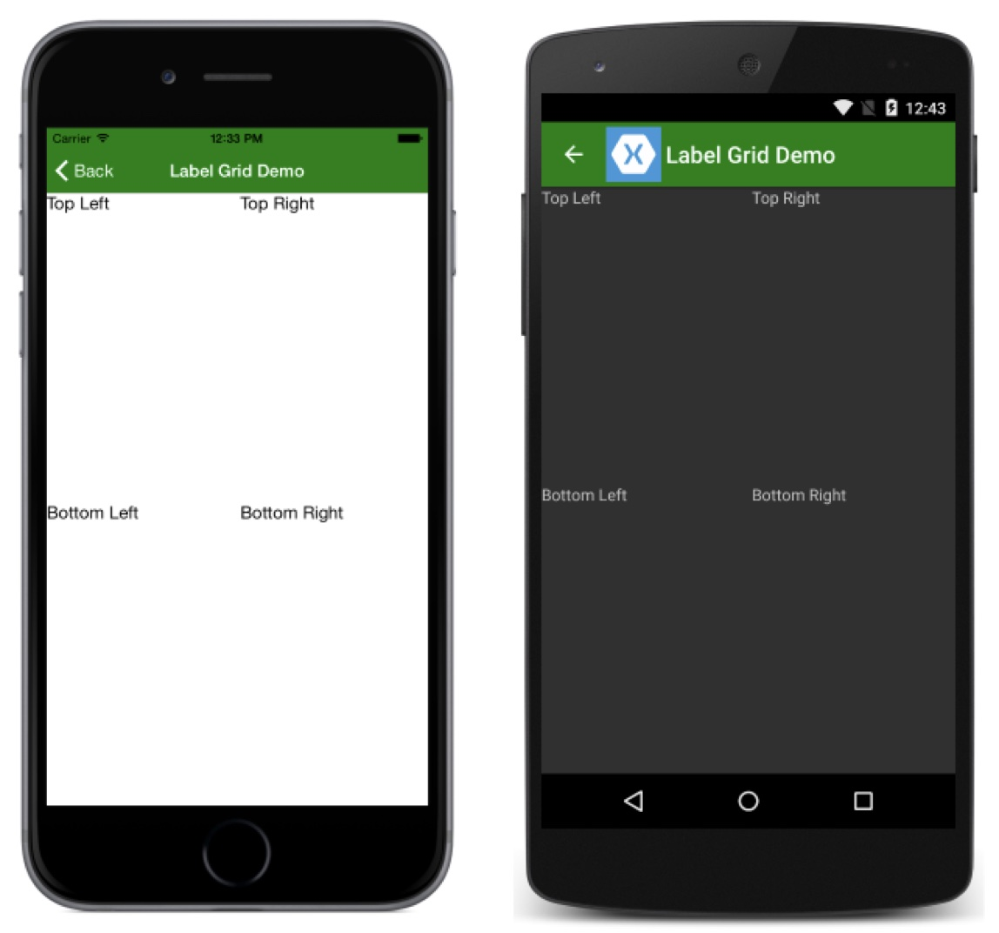
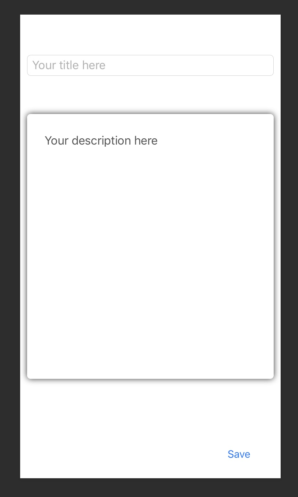
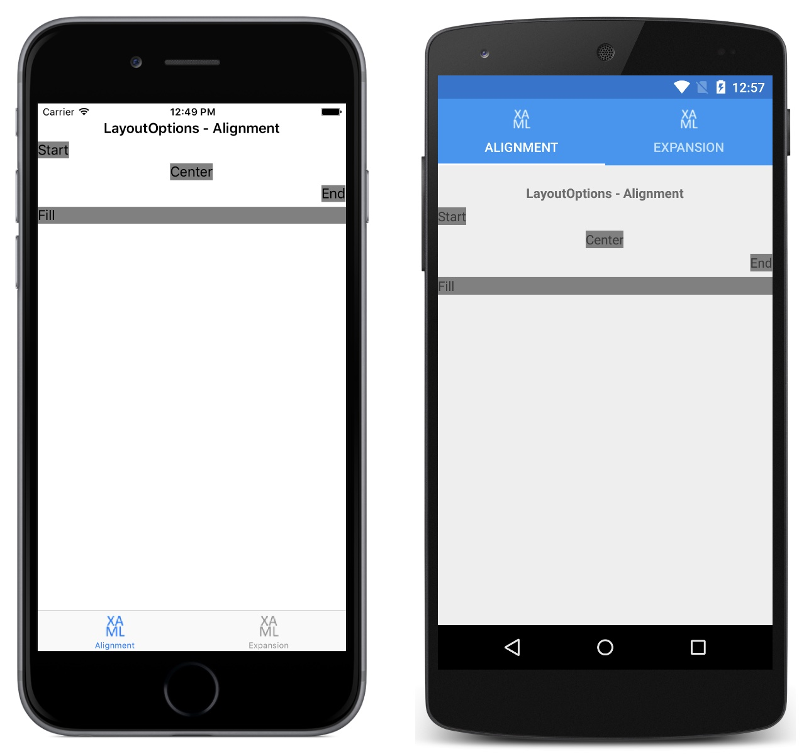

Mobile App Entwicklung
Lektion 2
MVVM, Bindings, Controls, Debugging
Rückblick
- Jeder hat ein Projekt auf GitHub eingerichtet
- Jeder hat alle benötigte Werkzeuge eingerichtet
- Jeder kann mit dem Simulator oder Gerät ausführen
-
Habt ihr eine
.gitignoreDatei erstellt?bin/undobj/ausschliessen- Unerwünschte Dateien aus dem Repo löschen
Übersicht Lektionen
- Vorstellung, Einführung und Aufsetzen von Werkzeugen
- MVVM, Bindings, Controls, Debugging
- Dialogs, Styling, IOC, Testing
- Benachrichtigungen (Lokal/Push/Remote)
- Hybrid-Apps
- Security & Biometrie
- Datenbanken (SQLite); Logging
- LK1; Projektarbeit
- MLZ Präsentationen; Themen nach Wahl
Einführung UI
- MVVM
- XAML for Forms
- Verfügbare views/layouts/controls
- Bindings
- Commands
MVVM Pattern
- MVVM = [M]odel [V]iew [V]iew[M]odel
- Entkoppelt Logik von Ansichten
- Setzt Bindings ein, um View mit Logik zu verbinden
- Das automatisiertes Testen von Views oder mit denen assoziierten "code-behind" Code ist schwer.
- Deshalb soll das "ViewModel" vom Ansicht entkoppelt sein.
MVVM Pattern
ViewModels
Beinhalt die Logik für das Anzeigen vom UI (nicht Business-Logik)
- Welche Controls sind aktiviert (enabled)?
- Welche Items beinhalten Listen?
- Was passiert beim interagieren mit dem UI? (Z.B. beim anklicken eines Elements?)
- Ansicht-spezifische Konvertierungen von Daten (z.B.
AgevonBirthdateberechnen)
ViewModel Benachrichtigungen
- Findet meistens über INotifyPropertyChanged statt
- Kann generisch abgefangen werden (wir werden eine Basis-Klasse dafür definieren)
public bool IsSelected
{
get => _isSelected;
set
{
_isSelected = value;
RaisePropertyChanged();
}
}
protected void RaisePropertyChanged([CallerMemberName] string property = "")
{
PropertyChanged?.Invoke(this, new PropertyChangedEventArgs(property));
}
Listen von Elementen
- Findet über INotifyCollectionChanged statt
- ObservableCollection implementiert diese und benachrichtigt von Änderungen
public ObservableCollection<TodoItemViewModel> Items
{
get => _items;
set
{
_items = value;
RaisePropertyChanged();
}
}
Unterschied Modell vom ViewModell
Ein Modell
- Repräsentiert die unverzierte Daten (z.B. das, was in die Datenbank gespeichert ist)
- Beinhaltet keine Logik
- Benachrichtigt Änderungen nur sehr selten
Fragen?

MVVM
- Modell definieren
- ViewModell definieren
- View definieren

Übungen
Mindestens ein Modell und ein ViewModell in die eigene App erstellen
- Benötigte Properties hinzufügen
PropertyChangedwo nötig aufrufen

Pages und Layouts
Pages
Repräsentiert ein Screen (ganzer Bildschirm)
* Dokumentiert mit dem obsoleten MasterDetailPage
Layouts
Ableitungen von Views
- ContentPage beinhaltet ein einziges Element
- Frame ist ein
ContentViewmit Position und Rand - ScrollView verwaltet einen scrollbaren Bereich
- StackLayout arrangiert Elemente vertikal oder horizontal
- Grid arrangiert Elemente in Spalten und Zeilen
- FlexLayout arrangiert Elemente mit CSS Flexbox
- TableView arrangiert Elemente in einer Tabelle
Grid Layout
- Grid ist eine der mächtigsten Kontrollen
- Definiert Reihen und Spalten mit
RowDefinitionsundColumnDefinitions - Elementen hinzufügen und einen
RowIndexund/oderColumnIndexzuweisen
Grid: Zellen einteilen
Die Grösse einer Zelle kann:
- Automatisch von Elementen berechnet werden ("content sizing")
- Default: Proportional berechnet werden ("*-sizing")
- Auf einem absoluten Wert "fixiert" werden ("fixed sizing")
Siehe Beispiel in die Dokumentation
Grid XAML Beispiel
<Grid>
<Grid.RowDefinitions>
<RowDefinition Height="*" />
<RowDefinition Height="*" />
</Grid.RowDefinitions>
<Grid.ColumnDefinitions>
<ColumnDefinition Width="*" />
<ColumnDefinition Width="*" />
</Grid.ColumnDefinitions>
<Label Text="Top Left" Grid.Row="0" Grid.Column="0" />
<Label Text="Top Right" Grid.Row="0" Grid.Column="1" />
<Label Text="Bottom Left" Grid.Row="1" Grid.Column="0" />
<Label Text="Bottom Right" Grid.Row="1" Grid.Column="1" />
</Grid>
Grid Beispiel Visualisierung
Controls
Common Controls
Label: nicht editierbare TextButton: klickbares/tippbares ElementEntry: Ein Editor für eine TextzeileEditor: Ein Editor für mehrere TextzeilenListView: eine vertikale Liste von DatenPicker: ermöglicht der Auswahl eines Elements aus einer Liste (auch "dropdown" oder "combobox")DatePicker: vereinfacht der Auswahl eines Datums
Common Controls II
TimePicker: vereinfacht der Auswahl einer ZeitImageButton: einButtonmit Text und BildStepper: vereinfacht der Auswahl einer ZahlSlider: vereinfacht der Auswahl einer Wert aus einer BandbreiteCheckboxstellt einen booleschen Wert dar
Controls XAML Beispiel
<Grid Margin="10">
<Grid.RowDefinitions>
<RowDefinition Height="*" />
<RowDefinition Height="3*" />
<RowDefinition Height="*" />
</Grid.RowDefinitions>
<Entry Grid.Row=“0" VerticalOptions=“Center" Placeholder="Your title here” />
<Frame Grid.Row="1">
<Editor VerticalOptions=“FillAndExpand" Placeholder="Your description here” />
</Frame>
<Button Grid.Row=“2" HorizontalOptions=“End" VerticalOptions=“End>
WidthRequest=“100" HeightRequest=“50" Text="Save" />
</Grid>
Controls Visualisierung
Anordnung von Controls
- Layout Options:
VerticalOptionsandHorizontalOptionsStart,End,CenterundFill- Suffix
AndExpandkontrolliert die Zuteilung von zusätzlichem Platz (siehe Beispiele auf StackOverflow)
- Expansion wird in
StackLayoutsbenutzt
Anordnung Visualisierung
Label: Eigenschaften
Textwird im Layout angezeigt
Button: Eigenschaften
Textwird im Layout angezeigtCommandwird beim Klicken oder Tippen ausgeführtCommandParameterwird demCommandweitergegeben
Entry: Eigenschaften
Textist die angezeigte und/oder eingegebene TextPlaceholderwird im leeren Entry angezeigtMaxLengthschränkt die maximale Länge der Text einIsPasswordgibt an, ob*soll für eingegebene Text benutzt werdenClearButtonVisibilitygibt an, ob ein Button angezeigt werden soll womit den Inhalt gelöscht werden kannKeyboardkontrolliert welche Tastatur angezeigt werden soll
Editor: Eigenschaften
- Eigenschaften von
Entry IsPasswordwird nicht unterstütztAutosizegibt an, ob die Grösse der Kontrolle an den Inhalt angepasst werden sollIsSpellCheckEnabledgibt an, ob Rechtschreibung eingeschaltet istIsTextPredictionEnabledgibt an, ob Selbstkorrektur eingeschaltet ist
"Hot Reload"
- Ermöglicht das Wahrnehmen von Änderungen ohne, dass die App neu ausgeführt werden muss
-
Siehe Bekannte Einschränkungen
- Geht nur für XAML-Änderungen (leider noch keine C#-Änderungen)
- Benötigt "Link None" oder "Don't Link" in die Build-Optionen
-
Siehe Troubleshooting
- "XAML Hot Reload" Output-Fenster anzeigen
Controls und Layouts
- Beispiele von oben einbauen und anschauen
Fragen?
Übungen
- Layout erstellen und damit spielen
- Verschieden Controls einbauen, um ein Gefühl dafür zu bekommen
Data-Binding
Beispiel mit ListView
- Als
ItemsSourceeinObservableCollection<T>einsetzen ItemTemplatebeeinflusst die visuelle Repräsentation- Mit
SelectedItemkönnen Änderungen abgefangen werden
Code von ListView Beispiel
Das ViewModell:
public ObservableCollection<TodoItemViewModel> Items
{
get => _items;
set
{
_items = value;
RaisePropertyChanged();
}
}
private ObservableCollection<TodoItemViewModel> _items;
Code von ListView Beispiel
Das View:
<ListView
ItemsSource="{Binding Path=MyList}"
SelectedItem="{Binding SelectedItem, Mode=TwoWay}">
<ListView.ItemTemplate>
<DataTemplate>
<ViewCell>
<StackLayout>
<Label Text="{Binding Firstname}" />
<Label Text="{Binding Lastname}" />
</StackLayout>
</ViewCell>
</DataTemplate>
</ListView.ItemTemplate>
</ListView>
Binding erstellen
-
BindingContextzum ViewModell definieren- Syntax:
{Binding Path=Value} BindingModekannDefault,OneWay,TwoWayoderOneTimesein
- Syntax:
INotifyPropertyChangedimplementierenIValueConvertereinsetzen, um Werten "on the fly" zu konvertieren
BindingContext
BindingContextist die “Source”BindingContextwird geerbtx:Referenceeinsetzen um ein Control mit Namen zu referenzierenRelativeSourceermöglicht eine bessere Kapslung für Komponenten
Kompilierte Bindings Beispiel
<ContentPage xmlns="http://xamarin.com/schemas/2014/forms"
xmlns:x="http://schemas.microsoft.com/winfx/2009/xaml"
xmlns:viewModels="clr-namespace:ToDo.ViewModels"
x:Class="Todo.Views.TodoDetailPage"
x:DataType="viewModels:TodoItemViewModel"
Title="Details">
<ContentPage.Content>
<Grid Margin="10">
<Grid.RowDefinitions>
<RowDefinition Height="1*" />
<RowDefinition Height="1*" />
<RowDefinition Height="3*" />
<RowDefinition Height="1*" />
</Grid.RowDefinitions>
<Entry Grid.Row="0" VerticalOptions="Center" Text="{Binding Title}" />
<Picker Grid.Row="1" ItemsSource="{Binding Priorities}" SelectedItem="{Binding Priority, Mode=TwoWay}" />
<Frame Grid.Row="2">
<Editor VerticalOptions="FillAndExpand" Text="{Binding Description}" />
</Frame>
<Button Grid.Row="3" Command="{Binding SaveCommand}" Text="Save" />
</Grid>
</ContentPage.Content>
</ContentPage>
IValueConverter
- Einsetzen um den Wert eines Bindings anzupassen
IValueConverterSchnittstelle implementieren
<ContentPage.Resources>
<ResourceDictionary>
<local:IntToBoolConverter x:Key="Converter" />
</ResourceDictionary>
</ContentPage.Resources>
<Button
IsEnabled="{Binding Path=SomeValue, Converter={StaticResource Converter}}”
Text="Click me" />
Fragen?
Bindings
- Binding definieren
IValueConverterdefinieren- Kompilierte Bindings benutzen
Übungen
- Ein kompilierte Binding mit einem
IValueConvertererstellen
Commands
Commands
- Einsetzen um Code auszuführen
CommandKlasse mit einem delegate einsetzenCanExecutenoch nicht benutzen- Bestehende Implementation aus Xamarin einsetzen (eine eigene Version muss man nicht schreiben)
<Button Command="{Binding Path=AddTodoCommand}" Text="Click me" />
AddTodoCommand = new Command(() => { /* ... */ });
Kommandos mit Parametern
- Generische
CommandKlasse einsetzen CommandParameterin XAML setzen
<Button Command="{Binding Path=AddTodoCommand}" CommandParameter="1" Text="Click" />
AddTodoCommand = new Command<int>(parameter => { /* ... */ });
Konkretes Beispiel
XAML Datei
<Button Command="{Binding SaveCommand}" Text="Save" />
ViewModell
public ICommand SaveCommand => new Command(() =>
{
_listViewModel.Items.Add(this);
_navigation.PopAsync();
});
Fragen?
Bindings
- Kommando zeigen
- Kommando mit Parameter zeigen
Übungen
- Eigenes Kommando mit Parameter definieren
ListViewDataTemplate mit einem Konverter für eine Farbe oder Icon ergänzen (siehe images)